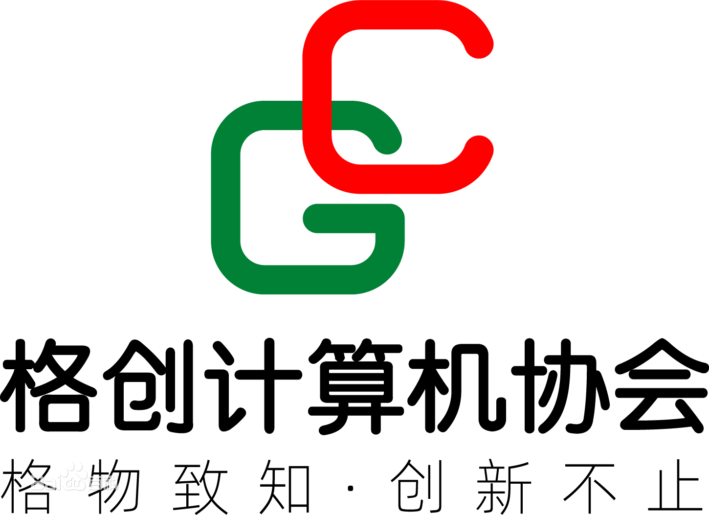

格创
聊城大学计算机学院格创计算机协会
格创计算机协会，全称“聊城大学格创计算机协会”，创立于2006年5月，是聊城大学的校级社团之一，其前身是“聊城大学计算机学院大学生社团联合会计算机专业协会”，2008年10月正式改名为“聊城大学格创计算机协会”。

第十五届格创全体成员合照
简介
聊城大学格创计算机协会是一个以聊城大学为依托、以聊城大学计算机学院为主要科技阵地，由学生自主参与、组织、管理的致力于研究和发展计算机技术的科技型学生社团。
格创坚决拥护党的领导，遵守聊城大学党团组织关于社团工作的条例，在计算机学院分团委的指导和大力支持下以“社会实践、青春创业、服务社会、协会建设”为主要方向来开展工作。社团组织、策划并积极参与社会实践，先后与上海杰普软件科技有限公司、万洲软件科技有限公司、青岛软件园、潍坊中印环球软件公司等多家IT 企事业单位建立共建合作关系，在校内外建立了多处稳定的学生技能实践基地。格创的多个实践项目服务队被评为校社会实践先进服务队，光明日报（2009年2月22日，第六版）、中国教育报、农民日报、现代教育报等媒体多次报道格创所开展的品牌实践活动。
在社团专业指导老师的指导及全体格创人的共同努力下，近三年来格创在科技创新及软件研发方面取得了不俗的成绩：为学校开发了大型管理系统14套、学校部门组织网站50余套，为校外企事业单位开发了管理系统及网站系统100余套；先后荣获国家级奖项14项、省级奖项23项、校级奖70余项、院级奖150余项。在校内外产生的积极影响，使格创成为校优秀科技学生组织的代表。
目前，协会拥有网络办公室、科技创新实验室、硬件实验室及专业实训机房，计算机技术类书刊杂志千余册，同时积累制作了大批计算机教程及技术手册，吸纳并培养了大批具有较高计算机技术开发水平的学生骨干。
名称含义
“聊城大学计算机学院格创计算机协会”名称由三部分构成，依次为“聊城大学计算机学院”“格创”“计算机协会”。
“聊城大学计算机学院”指示本组织所属的学校及学院；
“格创”指示本组织的核心价值和文化底蕴，取的是“格物致知，创新不止”之意，“格物致知”语出《礼记·大学》：“欲诚其意者，先致其知，致知在格物。”《现代汉语词典》解释为：穷究事物的原理法则而总结为理性知识。“创新不止”意为“在原有的知识和技术基础上不断努力创新，研究和开发出新的技术及成果”。连在一起“格物致知，创新不止”的意思就是“先努力地研究和学习现有的技术，使其上升为灵活的知识技能，然后在这些知识的基础上无止境地创新，研究和开发出新的技术及成果”，这就是本组织的宗旨及价值；
“计算机协会”指示本组织的性质为一个研究和发展计算机技术的技术性学生团体。
视觉标识

位于视觉标识左侧的图标取自“格创”的拼音首字母“GC”的变形图，两个嵌套的字母变形图表达了组织成员紧密团结之意，而太阳红和草原绿的颜色搭配则象征着这个组织像地平线上升起的太阳，带来希望和力量，并预示着本组织将会像“草原上升起不落的太阳”一样积极发展。
位于视觉标识右上角的“格创计算机协会”这七个字是本组织的名字简称，是本视觉标识的主要元素，使用的字体是方正准圆。
位于视觉标识右下角的“格物致知·创新不止”是本组织的核心价值和文化底蕴体现。
文化
“格创”取“格物致知，创新不止”之意，寓指“先努力地学习和研究现有的技术，使其上升为灵活的知识技能，然后在这些知识的基础上无止境地创新，研究和开发出新的技术”，这也是格创的核心价值和文化底蕴。
格创是一个科技型的社团，但其文化决不仅仅停留在技术层面上，而是充分重视发展成员素质文化；通过各种渠道，积极组织诸如野外素质拓展、科普下乡、科技服务进社区等各种能提高成员素质和团队精神、提升组织凝聚力和战斗力的综合素质拓展活动。
管理体制
格创计算机协会是一个团结奋进的学生组织，格创在人员任用上实行聘任负责制。2020年10月，伴随着新一届格创成员的产生，格创与时俱进，秉持“创新不止”的理念，对未来的工作做出了新的规划。格创下设主席团、管理中心、科技中心、三创活动中心和视觉设计工作室。管理中心下设办公室、活动策划部和IT信息部，科技中心下设研发室、网络运维部、网站设计部和ACM训练队，三创活动中心下设赛事运营部和三创工作部，视觉设计工作室下设平面创意组和影音部落组。主席团是格创的最高领导机构。
格创紧紧围绕“发展技术”这一中心运行，在日常工作的管理中，各部门有着不同的分工和重心。
格创以自主开发的“格创计算机协会成员管理系统”为核心管理系统，配合网站系统、博客系统、IM通讯系统等多元化的交流渠道迅速有效地开展工作，使得各部门的工作形散神聚、协调一致、细致到位，成效显著。
创新亮点
在过去近几年的发展中，每每遇到关于发展和创新的问题时，格创全体成员总能以“积极应对、群策群力、科学研究、探索创新”的思路积极面对，这不仅解决了问题，而且促进格创更好更快的科学发展并进一步形成了格创作为科技型社团的特色和亮点。
简化制度 提高成效
针对传统学生组织章程繁冗、执行力度差的问题，格创采取“化繁为简，分而治之”的方式。在部门工作制度方面，把格创成立之初订立的《格创章程》具体分解为各个部门、各项工作专用的管理办法；在日常管理制度方面，制定一个可实时修订、适应实际的简化制度，执行“出现一个问题”→“深化一个问题”→“解决一个问题”的工作路线，把格创当前出现的问题及时修订更新到日常管理制度中。这些改革使得工作上得到了立竿见影的效果。
开展格创计算机技术水平认证工作
利用格创在校园内的技术权威性，创先开展“格创计算机技术水平认证”工作，“格创计算机技术水平认证”有这一套科学完善的认证体系，通过相应笔试、机试及综合评估，为学生颁发“格创计算机技术水平认证证书”。此认证是校园内计算机技术的通行证，并由学院优先向用人单位推荐就业。这样既肯定了计算机技术好的同学，同时又为学校、企业甄别技术人才起到了重要作用，取得了双赢。
目前全校已有80余人次获得了各类别的“认证证书”。
结对校园送技术
协会以聊城大学附属小学为试点，逐步推广“结对校园送技术”活动，为计算机技术有需求的学校提供技术协助和技术培训；帮助结对学校管理和维护机房，为结对学校的教师培训信息化教学技能，为结对学校的学生们讲授最有趣使用的电脑知识。
此活动解决了电脑教师缺乏、电脑设备维护不及时等问题，开拓了普及电脑知识的新思路，受到了社会的广泛好评。同时格创也通过这项活动很好地锻炼和发展了成员的技术实际应用能力。
青春创业 创造未来
在这个就业紧张的时代，创业就是新型就业。格创根据自身情况及社会需求实际，积极试水“青春创业”。利用综合培训部的业务素质特点，创先筹办了格创计算机服务有限公司，把学生社团的技术和人才真正地转化为社会价值和经济价值，掀起了校园“青春创业”的大潮。
格创通过质优价廉的电脑上门维护服务、计算机等级考试培训服务等项目发展业务，这样既解决了学校及周边地区对电脑技术的需求，又锻炼和发展了格创的技术实践能力，同时也解决了格创发展的经费问题，实现了多赢。
以上内容摘自百度百科和学校官网。
相关链接：
百度百科：聊城大学计算机学院格创计算机协会计算机学院